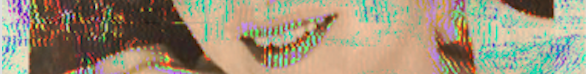

"On a mattress in the woods I meet a man with smiling eyes, his teeth a smashed finger piano."
"Fox wasn’t much bigger than her. Her arms were thin and delicate. Cat wondered what it would feel like to hold her in her teeth. "
"It might not be clear to you at first, but these boys are good friends. They have known each other since sixth grade, when they sat at the same lunch table, when the boy with the knife taught the short boy how to swear. On weekends they sit by the river together, throw pebbles at the water bugs. Last week they saw an eagle, watched it drown in the water under the weight of a fish it could not let go. Its wings beat faster and faster against the surface of the water until one wing dipped below, suddenly too weak to come back up, and then all that was left was a patch of choppy water. Neither boy spoke as the bird struggled, only continued to toss pebbles as they watched. "
"If you follow my spine you will find the things he leaves here, letters and letters and autographed pennies, kept under glass so the marker won’t run."
"Action, I write, is the inverse of guilt, and immediately feel terrible."
"The latch on the door was red with rust. Sleep reached out to lift it and it crumbled into a foxtail, red dust on white snow. It yipped."
Fiction
Boy Practice [Necessary Fiction]
Fox Skin [t3mz Review]
The Chicken House [Strange Horizons]
Hollowpoint [Pidgeonholes]
Grandmother in Blue [New World Writing]
Seven Dwarves [Gone Lawn]
Apoptosis [Wigleaf]
Draugr [Tiny Molecules]
I Tightened the Fishing Wire [Soft Cartel]
Squirrels in the Attic [Okay Donkey]
On My Toothbrush There Is Acetone [Cheap Pop]
Rooms in My Grandmother's House [Jellyfish Review]
My Little Cinder [Milk Candy Review]
Eye Bites [X-R-A-Y Lit Mag]
Essays
Cabrillo National Monument, 2019 [Booth]
Antikythera [Heavy Feather Review]
